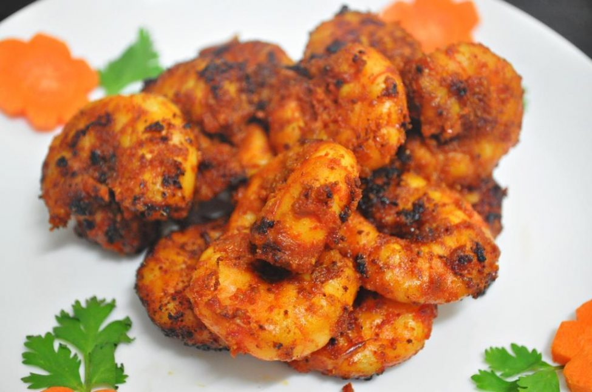

PRAWN FRY

Steps to make Prawn fry:
Clean and devein the prawns wash them well with water and drain the excess water. In a bowl, add the prawns. It is always a better idea to drain off the excess water in prawns when washed by allowing them to sit in a strainer for a while.
Add salt to taste as per the requirement
Add ginger-garlic paste. Freshly homemade ginger garlic paste is best as it gives the best aroma and flavour.
Add red chilli powder and turmeric powder.
Add roasted coriander seeds powder.
Mix the whole mixture well so that the prawns get coated well with the masala.
Take a frying wok, add oil and heat it.
Add the prawns into the heated oil.
Stir the mixture well with the oil and stir it delicately.
Add fresh curry leaves into the cooking prawns.
Cook the prawns for about 10 -15 minutes and give a stir in between.
Garnish it with coriander leaves